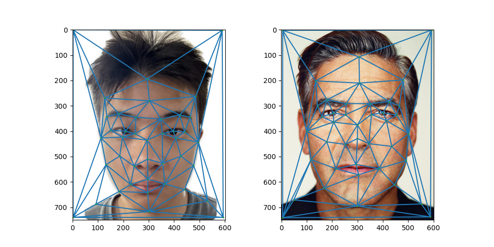
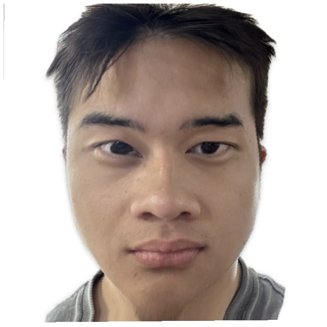
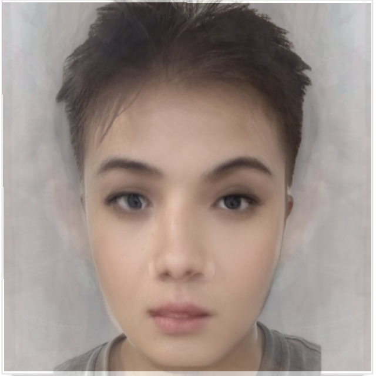
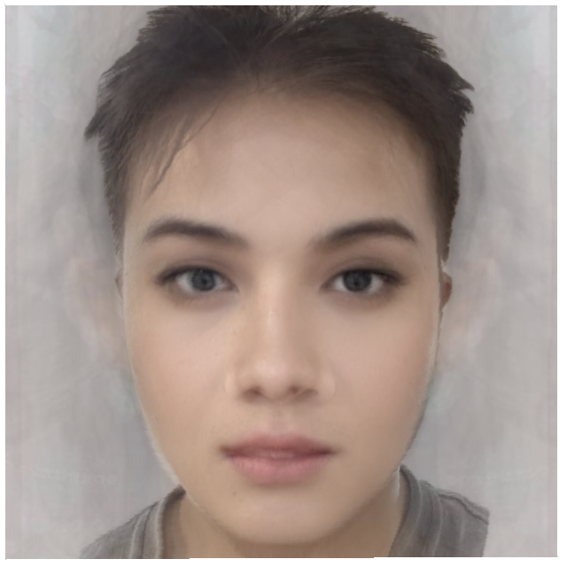

Overview
In project 3, I manually selected pairs of corresponding key points on both images and used scipy.spatial.Delaunay to compute the triangles. Then, I implemented affine transformations and cross-dissolving to compute the mid-way face. Additionally, I predefined 80 values for warp_frac and dissolve_frac in the range [0,1] to generate a morphing animation between two faces. Furthermore, I computed the mean face of the Danes dataset and warped the mean face to my geometry, as well as warped my face to the mean geometry. Using the mean face, I created a caricature of my face by extrapolating from the mean face. Finally, I changed my face's shape, appearance, and both to resemble an average face of 12 women, who were chosen as the most beautiful faces in 2012.
Part 1. Defining Correspondences
I use the provided labling tool here to select key points between two facese and use scipy.spatial.Delaunay in python to compute triangulation of the mean of the two points.
The left face is me and the right face is George.
Part 2. Computing the "Mid-way Face"
In this part, I first compute the average of each key point in the two faces and use the average points to compute the triangulation for the two faces. Then, I calculate the inverse affine transformation matrix from the triangles in the average shape to the original triangles. Using this transformation, I warp the original image to the average shape. Finally, I implement cross-dissolving by averaging the morphed images.

Part 3. The Morph Sequence
In this part, I defined 80 values of warp_frac and dissolve_frac in the range [0,1] to generate a morphing animation between two faces.

Part 4. The "Mean face" of a population
In this section, I compute the average face of Danes. First, I collect the key points of each face and calculate the average points. Then, I warp all the faces to match the average shape. Finally, I compute the average face for all Danes, as well as for male and female Danes separately.
Here are some examples of warped faces:
Here are examples of mean faces:
By using the average face, I warp my face to match the average geometry and warp the average face to match my geometry.
Part 5. Caricatures: Extrapolating from the mean
I create a caricature of my face by extrapolating from the mean male face obtained in the previous section. I use the parameter alpha to control the intensity of the caricature. When alpha is below 0, it exaggerates features of my face, and when alpha is greater than 1, it exaggerates the features of the mean male face.
Bells and Whistles
Change gender
In this part, I changed my face's shape, appearance, and both to resemble an average face of 12 women, who were chosen as the most beautiful faces in 2012 (shown in the left). I use the average face as a second image.
I firstly morp my face to the average face shape
Then, I morp the average face to my face shape and change my appearance
Finally, I change both my shape and appearance
